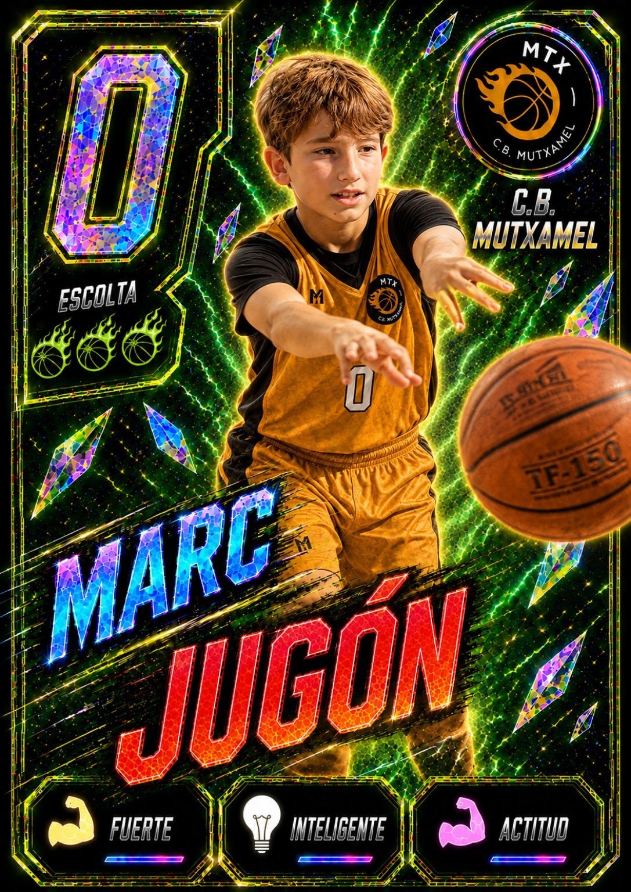
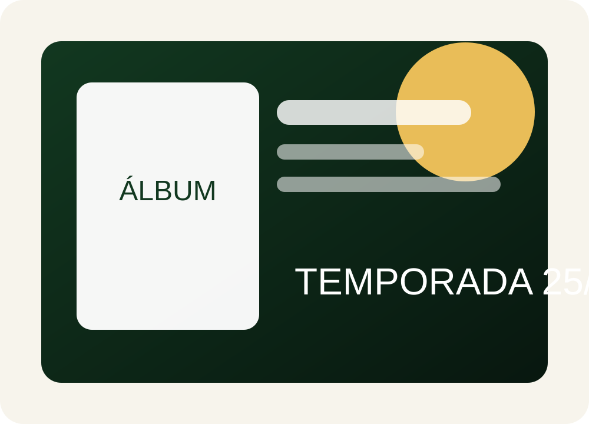
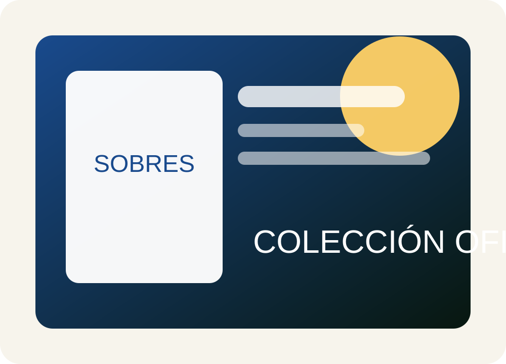
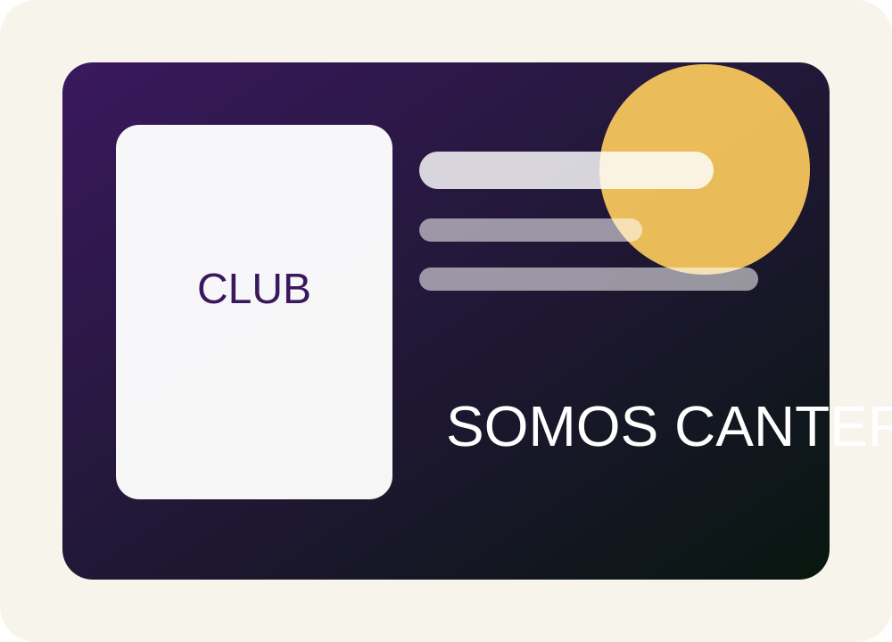
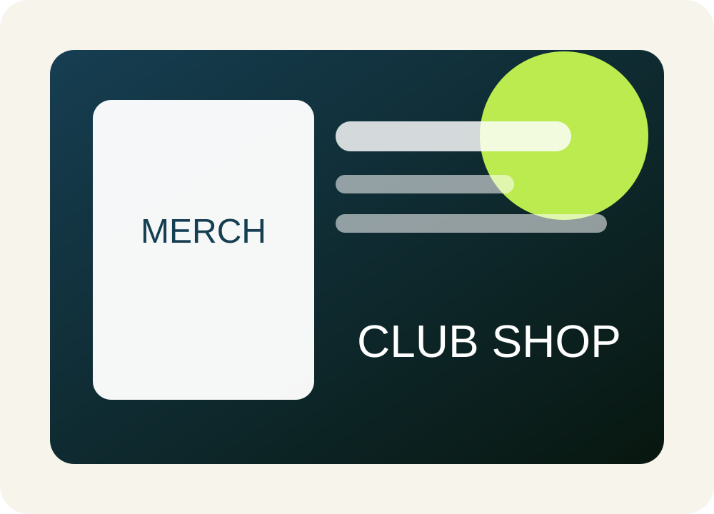

Recuerdo de temporada
Una colección que las familias guardan más allá del último partido.
Álbumes oficiales para clubes deportivos
Creamos álbumes, cromos y sobres personalizados para que cada jugador, entrenador y equipo tenga su sitio en una colección oficial de la temporada.


La idea clave
El álbum funciona porque une recuerdo familiar, orgullo de equipo y financiación. El jugador quiere verse. La familia quiere guardarlo. El club gana imagen y puede obtener ingresos.
Una colección que las familias guardan más allá del último partido.
Sobres, álbumes y patrocinadores locales pueden ayudar a generar ingresos.
Un proyecto oficial y cuidado mejora la percepción ante familias y patrocinadores.
Organizamos fotos, diseño, producción y entrega con un proceso guiado.
Productos
Una oferta pensada para clubes: álbum, cromos, sobres, cromos especiales y productos derivados.

Portada personalizada, páginas por equipos, espacios para jugadores, entrenadores, patrocinadores y momentos destacados.

Sobres cerrados para mantener la emoción de abrir, cambiar y completar la colección.
Cromo individual para cada jugador, entrenador o miembro del cuerpo técnico.

MVP, capitán, goleador, portero, plantilla completa, escudo y momentos de temporada.

Calendarios, foto oficial, tarjetas de socio, pósters y regalos personalizados.
Proceso
Vemos número de participantes, categorías, fechas y si interesa venta de sobres o pack cerrado.
Organizamos la recogida de fotografías, nombres, dorsales, categorías y patrocinadores.
Creamos portada, cromos, páginas por equipo y piezas especiales con la identidad del club.
Preparamos álbumes, cromos y sobres para que el club pueda distribuirlos a las familias.
Precios orientativos
Los importes finales dependen de número de participantes, tirada, impresión, entrega y patrocinadores.
Para clubes con volumen suficiente y venta de álbumes/sobres.
Álbum con colección o pack de cromos cerrado.
Pedido digital personalizado para regalos o casos sueltos.
*Modelo sujeto a número mínimo de participantes y condiciones de producción. Los precios son orientativos para explicar el modelo comercial.
Enfoque recomendado
Solicita propuesta
Cuéntanos deporte, número aproximado de jugadores y fecha objetivo. Te devolveremos una propuesta clara con formato, precios y pasos.